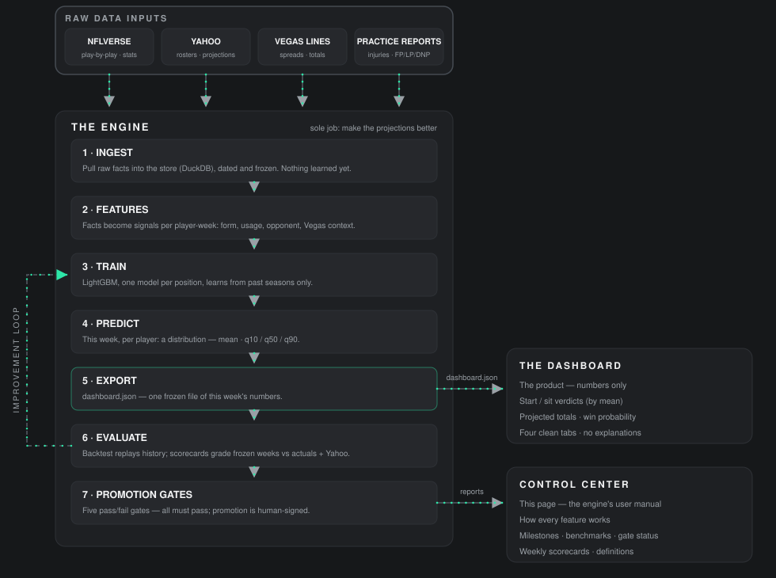

Control Center
What this page is
AUSPICIA is three separate things, and this page is the third one:
- The engine — backstage. Its only job is to make the projections better: ingest data, build features, train, predict, evaluate, diagnose.
- The dashboard — the product. It plugs in the latest model's weekly numbers and shows verdicts, plainly. It does not explain the engine.
- The Control Center — this page. The manual for the engine: how each feature works, where the project stands, and how the model is actually doing.
This page is read-only. It reads engine outputs — evaluation reports, gate status, benchmarks — and never changes them. There is no write path back from here to the engine or the dashboard.
How it all fits together

One contract worth remembering: Yahoo is not training fuel. It supplies the league's rosters (who to predict for) and Yahoo's own projections (the rival the scorecard grades against). Training data is NFLverse history, scored under this league's exact rules.
How the engine works
The pipeline, step by step. Every prediction is made using only information that existed before that week's games — no peeking at results.
- 1 · Ingest. NFLverse play-by-play, player stats, schedules, and Vegas lines are loaded into a local store covering 2018 onward. Every row carries the moment it became known, so history can be replayed honestly.
- 2 · Features. Raw facts become per-player-week signals: recent form (last game, last 3, last 5, a recency-weighted average, trend direction), opportunity (snap share, target and carry shares, air yards, red-zone work), matchup strength, and the game environment (spread, total, implied team points).
- 3 · Train. A separate LightGBM model per skill position — QB, RB, WR, TE — trained on past seasons under this league's scoring (non-PPR, 6-point passing TDs, the 40+ yard TD bonus). Kickers and defenses use a simpler regression built mostly on the Vegas lines.
- 4 · Predict. Each player gets a distribution, not a single number: a mean (expected points — the lineup is picked on this), a median (the typical week, the headline on his card), and a 10th–90th range (bad week to great week). Win probability is arithmetic on the two teams' totals.
- 5 · Evaluate. Two kinds of grading. The backtest replays 2022–2025 week by week — 72 rounds, training only on the past each time — and produces the benchmarks below. The weekly scorecard freezes live predictions before kickoff and grades them against actuals and Yahoo once the week is final.
- 6 · Promotion gates. A model earns the claim "proven" only by passing all five written gates (next card). Until then the site still runs its numbers — by the owner's decision — but the Lab says, honestly, that it is not promoted.
Known gaps, stated plainly: live weekly predictions use the model's raw ranges — the conformal calibration that holds up in the backtest is not applied live yet (that's M7 work). Win probability assumes a fixed spread of outcomes (standard deviation 25) that has not been fitted to results yet.
Promotion gates
- 1 · Accuracy beats the legacy baseline (q50 MAE, at least 3 of 4 seasons)PASS
- 2 · No position left behind vs the baselinePASS
- 3 · Mean bias within ±0.3 points, every position, every seasonFAIL
- 4 · Interval coverage inside the 77–83% bandPASS
- 5 · Lineup points gained vs the baseline is not negativePASS
Gate 3's seven failures — all from the 2022–2025 backtest, mean head:
- QB 2022 · +0.66
- WR 2022 · +0.40
- QB 2023 · +0.70
- K 2024 · −0.57
- QB 2025 · +0.72
- K 2025 · −0.55
- DST 2025 · −1.51
The diagnosis so far: the quarterback overprediction is real but not a constant offset (QB 2024 sits at −0.05), and the K/DST 2025 failures are recent and tail-driven. The next engine step is a pre-registered, mechanism-level fix — written down as DESIGN §22 before it runs. One loose end is recorded openly first: the bias figures reproduce across reruns to about a thousandth of a point, but one rerun produced a different report digest and the cause is not yet pinned down. No fix gets built on an unexplained digest.
Benchmarks — the 2022–2025 backtest
Rolling-origin replay: 72 weekly folds, each trained only on what came before it. Accuracy is q50 MAE — lower is better. The baseline is the legacy projection method.
| Season | Model MAE | Baseline MAE |
|---|---|---|
| 2022 | 3.63 | 4.03 |
| 2023 | 3.61 | 3.93 |
| 2024 | 3.68 | 3.97 |
| 2025 | 3.68 | 4.06 |
| Pooled | 3.65 | 4.00 |
- Interval coverage (share of actuals landing inside the 10th–90th range; target band 77–83%): QB 80.2% · RB 80.9% · WR 81.9% · TE 80.8% · K 79.8% · DST 80.4% — every position in band, 81.1% pooled.
- Lineup value: across four seasons of simulated lineups, picking starters by the model's mean gained +1,591.28 points over the baseline's picks; picking by the median gained +1,472.10. That gap is why the lineup is ranked on the mean.
- Weekly scorecards (live predictions vs actuals vs Yahoo): Week 8's predictions were frozen on Oct 28, before kickoff, and grade after the week finalizes on Nov 3. Week 7's grading is still to be computed — making the scorecard a routine weekly report is this page's standing job.
Provenance: evaluation report lgbm_skill_v1-seed0, git fa38e66, LightGBM 4.6.0, features v2.0, league scoring ffc_yahoo_v1. Hyperparameters were not changed after seeing the test seasons.
Milestones & progress
- M0 · Repo, CI, scoring — done. Skeleton, tests, continuous integration, the league's scoring ported and hand-checked.
- M1 · Data layer — done. The 2018–2025 store with as-of timestamps; re-ingesting changes nothing twice.
- M2 · Features — done. All feature groups built under both leakage policies, adversarially tested.
- M3 · Models + evaluation — done. Per-position models, the fold harness, and the promotion report above.
- M4 · Site — done. The dashboard, its JSON contract, and this page's predecessor, the Lab.
- M6 · Decisions + Challenge — in progress. Lineup decisions and the weekly scorecard against Yahoo. Week 8, 2026 is the first fully comparable Challenge week.
- M7 · Intervals + QB — next. Conformal intervals live, and the bias work behind the digest note and DESIGN §22.
- M5 · Yahoo automation — blocked. Waiting on Yahoo developer provisioning; the manual capture fallback is proven and is what the frozen scorecards use.
Recent shipped versions:
- 0.5.20 — the lineup objective switched from the median to the mean (the backtest gap above).
- 0.5.21 — the boom/bust tag: each player's range width ranked within his position.
- 0.5.22 — plain-language definitions and label tooltips (they move to this page in the dashboard-simplification phase).
- 0.5.24 — AUSPICIA: the repo rename, emblem-and-title header, splash lockup.
- 0.5.25 — one charcoal scheme; the theme system retired. Colour means data.
- 0.5.26 — this Control Center.
Definitions
Every label the dashboard uses, in plain language. This is their permanent home; the dashboard keeps only the numbers.
- Mean
- Expected points: his average outcome across many similar weeks. The recommended lineup is the one that maximizes total mean.
- Median
- The typical week: half his outcomes land above it, half below. It is the big number on his row — but the lineup is picked on the mean, not the median.
- 10th–90th range
- The model's 10th–90th percentile range: a bad week lands near the low end, a great week near the high end. Live ranges are the model's raw quantiles, not yet calibrated.
- Boom/bust
- How wide his range is versus the same position this week, by percentile of the 10th–90th width: Steady under 34, Balanced 34–66, Boom/bust 67 and over. Wide means more swing week to week — not more points.
- Opp rank
- Toughness of the opposing defense against his position, by fantasy points allowed per game this season in this league's scoring. 1 = toughest (allows the fewest).
- Vegas implied
- Points Vegas implies his NFL team will score, from the spread and the game total. Higher team totals usually mean more scoring to go around.
- Practice
- His latest practice report this week: FP full, LP limited, DNP did not practice. Blank means he was not on the injury report — not a guarantee he plays.
- Snap share
- Share of his team's offensive snaps in his most recent game, and how it moved since the first week shown.
- Last 6 weeks
- His actual fantasy points in each of the last six weeks he played, oldest to newest.
- Start · Monitor · Sit
- Start = in the recommended lineup. Monitor = a close call, flagged because a legal bench replacement is within the close-call margin. Sit = not in the recommended lineup.
- Projected total
- The sum of the recommended starters' mean projections.
- Win probability
- Chance of outscoring the opponent, computed from the two projected totals assuming a typical spread of outcomes around them.
- Yahoo chip
- Our median minus Yahoo's projection for him. Green = we are higher, red = Yahoo is higher.